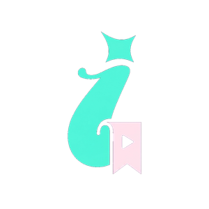

IntelliMarkEl aprendizaje supervisado necesita datos con etiquetas (pares X, Y) para ajustar los pesos del modelo mediante descenso de gradiente.
Overfitting: ocurre cuando el modelo memoriza el ruido de entrenamiento en lugar de generalizar. Se previene con Dropout y Regularización L2.